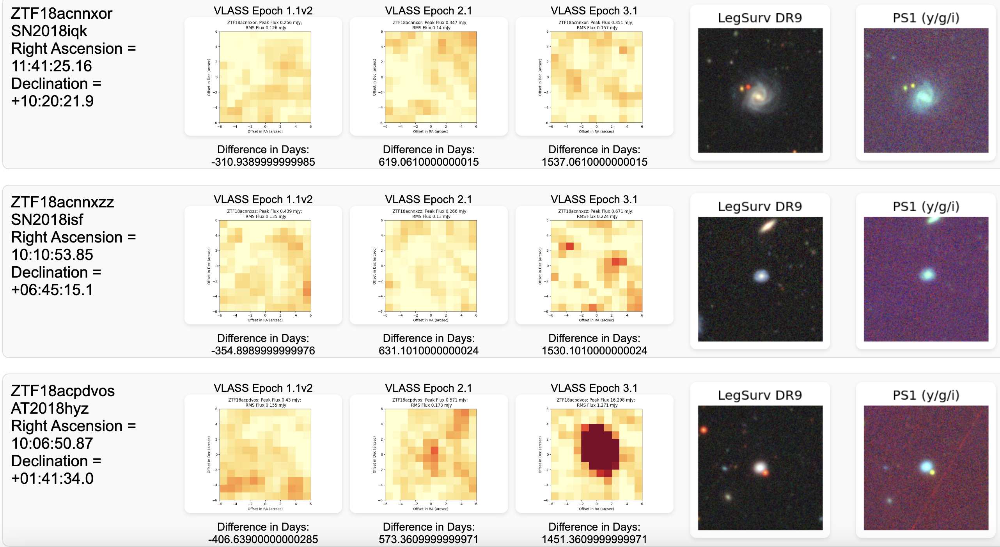

Project Overview
My work involved the cross-matching of radio data from the Very Large Array Sky Survey (VLASS) with optical data from
the Bright Transient Survey (BTS) headed by the Zwicky Transient Facility (ZTF). The cross-matching is done via the
usage of numerous Python scripts, which do the following, in that general order.
- Using a 'get_cutout' function, once the script is provided with right ascension and declination coordinates,
it will then search the VLASS catalog for a source at those coordinates across all the epochs. If a radio
If there is a corresponding tile, it will download that tile and all future iterations of itself, granted they
exist.
-
After downloading the VLASS tiles, it then begins to download cutouts from both the Legacy Survey and PanStaRRS
sky surveys, with the 'plot_ls_cutout' and 'plot_ps_cutout' functions, respectively.
-
Using two more functions, 'process_object' and 'process_csv', I am able to run the previously named functions
across an entire csv, such as this one, automating the process of
downloading the cutouts for the 8,888 objects.
-
After all the images are downloaded and saved to an 'Images' folder, I have another script that generates an
html webpage that displays the transients, their TNS ID, right ascension and declination, and the cutouts in a
single row. Furthermore, underneath each VLASS cutout, I have the difference in days from the initial observation
by ZTF. For example, if it says 'Difference in Days: 163.4210000000021', then that implies that particular epoch
observed that transient 163.421 days after ZTF observed the object, and naturally, if it says 'Difference in
Days: -947.6589999999997', then that epoch was imaged 947.658 days before ZTF observed the object. An example
of a few rows from the html page are pasted below.

-
At this point, I developed a script that calculated the statistical significances of the increase in the Peak
Flux and RMS across the epochs, which I then used to exclude transients who had a statistical significance of
less than 4, providing me with a list of transients who had clear, and statistically significant radio
detection.
-
Now that I had a list of transients I was confident with, I submitted a proposal to the Very Large Array for
additional observing of the transients.
-
All scripts associated with this project are available for public use on my GitHub, found in this repository.